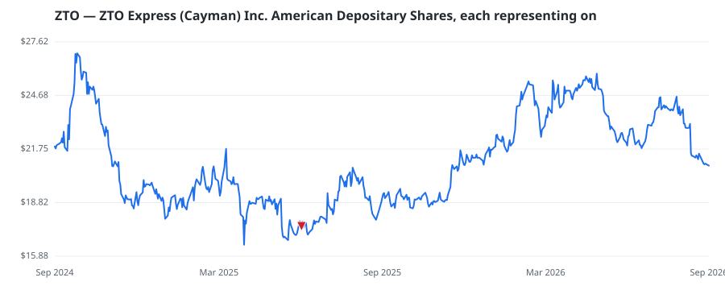

bullish · bearish · n/a — dots: price>SMA10 · SMA10>SMA50 · SMA50>SMA200 · up>down volume (20d)
Other · large cap

ZTO Express is China's largest express delivery company by parcel volume, with a volume share of 19.4% in 2024. It operates a network partner model where it provides line-haul transportation and sorting services, while its local network partners provide first-mile pickup and last-mile delivery services under the ZTO brand name. Headquartered in Shanghai, the company was founded in 2002 by Meisong Lai, who remains chair, CEO, and its major shareholder with 78% voting rights as of March 31, 2025. ZTO's strategic shareholder is leading China e-commerce company Alibaba Group with around an 8.9% in · website
🛒 Newly buying: HIMENSION CAPITAL (SINGAPORE) PTE. LTD. (+66%, 0.0% of book)
| Fund | Fund alpha vs SPY | Position | % of book |
|---|---|---|---|
| Polymer Capital Management (HK) LTD | +34% | $1M | 0.1% |
| U S GLOBAL INVESTORS INC | +6% | $1M | 0.1% |
| HIMENSION CAPITAL (SINGAPORE) PTE. LTD. | +66% | $0M | 0.0% |
Hedge data: SEC EDGAR 13F · ranked funds beat SPY in >50% of their quarters · fund alpha = mirror-portfolio return minus SPY.